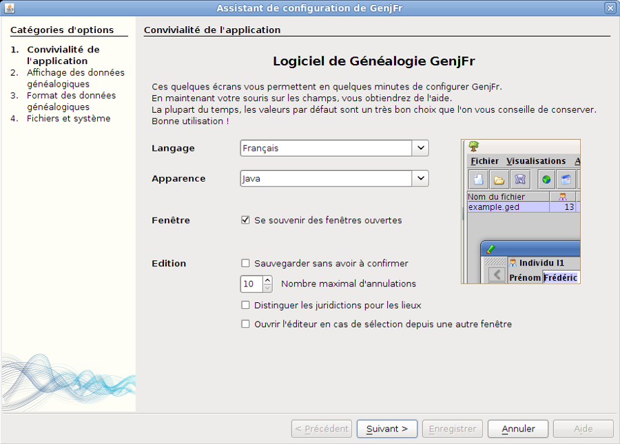
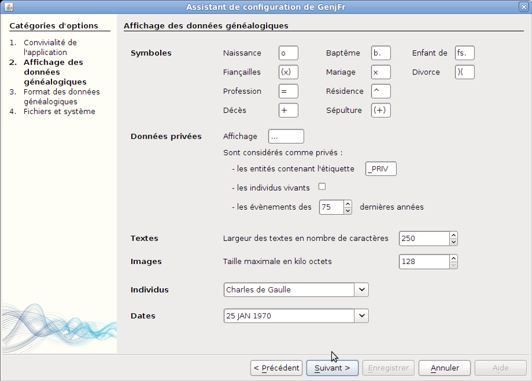
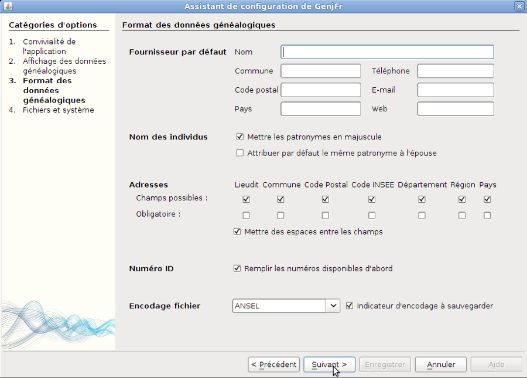
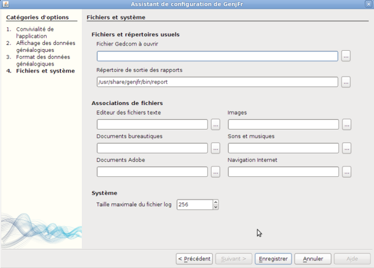

Votre démarrage avec GenjFr
Avertissement
GenjFr étant actuellement en perpétuel mouvement car les développeurs travaillent d'arrache-pieds pour nous offrir le meilleur logiciel libre.
Il est fort possible que dans vos manipulations futures certains bugs interviennent. Surtout pas de panique nous restons à votre écoute grâce aux liens.
Bienvenue dans le monde de GenjFr.
Si vous lisez ces lignes, nous supposons que vous êtes passionné de généalogie comme nous, mais pas forcément des logiciels de généalogie.
Nous vous proposons d'installer GenjFr en quelques clics et de vous donner les bases de son installation afin de profiter pleinement et rapidement de votre fichier gedcom.
Lancez GenjFr et en quelques secondes doit apparaître devant vous une fenêtre, appelée aussi «wizard». Il s'agit d'une fenêtre d'assistance à la configuration, votre premier lien avec GenjFr.
Premières configurations
N.B. : En déplaçant votre souris sur les images
ci-dessous, vous verrez que dans certains cas, le pointeur de votre
souris montre qu'il existe un lien vers une partie de l'aide qui vous
donnera quelques explications.

Pour vous débutant, il est actuellement préférable de laisser cet écran tel que, seule la ligne "Apparence" pourrait être modifiée
Certains problèmes persistent, ils seront vite résolus. Nous vous conseillons de rester sur l'apparence Java.
Si vous êtes un habitué de GenjFr et que vous voulez importer les paramètres de GenjFr déjà
sauvegardés sur une autre machine, il vous suffit de renseigner la première ligne de cette écran
«Nom du fichier» (cliquez sur les trois petits points au bout de la ligne pour faire apparaître
un navigateur de fichiers), et ceux-ci seront pris
en considération après un redémarrage du programme.
Cliquez sur «Suivant».

Les symboles: Ce sont ceux que l'on rencontre le plus souvent en généalogie, donc conservez les, mais bien sûr vous avez la possibilités de les modifier.
Les Données privées: trois lignes nous intéressent car elles sont importantes en cas d'importation de votre fichier sur Généanet par exemple.
* Les entités contenant l'étiquette : Vous allez créer par la suite un tag «_Priv» qui permettra lors de son incorporation dans vos fiches individu ou famille d'indiquer à GenjFr que ces informations sont privées et resteront en votre possession.
* Les «individus vivants» : devrait être cochés d'office
* Les évènements de moins de 75 ans, c'est la loi, ils concernent les naissances et les mariages.
Autre ligne celle des Individus. Vous voyez apparaître «de Gaulle, Charles», ce qui est logique car nous recherchons nos ancêtres par leurs noms.
Si vous voulez faire que les personnes soient représentées dans les tableaux et notamment pour les tris
par leurs prénoms et nom, il vous faut donc cliquer sur la fin de la ligne pour faire apparaître un menu déroulant et vous choisissez la représentation «Charles de Gaulle».
Pour la ligne Dates, même procédé que pour Individus, à votre convenance.
Cliquez sur «Suivant».

Dans cette nouvelle fenêtre, pour vous débutant, nous vous conseillons de la laisser ainsi.
Cliquez donc sur «Suivant».

Nous vous demandons à présent dans la première ligne «fichier Gedcom à ouvrir» d'indiquer à GenjFr le chemin de votre gedcom.
Cliquez sur les trois petits points en bout de ligne et rendez vous sur votre Gedcom (fichier *.ged).
Laissez par défaut la ligne «Répertoire de sortie des rapports».
Associations de fichiers : ici il faut indiquer encore un chemin permettant d'ouvrir vos documents photos, textes, vidéos et autres dans votre généalogie. Chaque logiciel étant différent dans les systèmes d'exploitations, il est donc
difficile de vous donner une configuration précise.
Nous pouvons donc maintenant enregistrer nos premiers paramètres de configuration. Donc cliquez sur «Enregistrer».
GenjFr s'ouvre
Voilà enfin GenjFr ou du moins sa carrosserie, celui-vous demande d'aller chercher votre fichier gedcom, cliquez sur «local» et suivez le chemin que vous avez défini lors de vos réglages précédents.
Votre Gedcom doit maintenant se lancer, mais pas de trace de fiches, d'arbres ou de classement.
Nous allons dans «Affichage» en haut à gauche:
- Sélectionnez «Editer»,
- Retournez dans «Affichage»,
- Sélectionnez «Table»,
- Retournez dans «Affichage»,
- Sélectionnez «Arbre».
Lors de cette manoeuvre vous avez dû vous rendre compte qu'il existe d'autres fenêtres possibles que vous pourrez installer par la suite.
Actuellement vous avez 4 fenêtres, dont trois l'une sur l'autre, nous allons donc les
déplacer afin d'avoir une vue d'ensemble de notre généalogie.
Nous vous conseillons pour l'instant de commencer par la fenêtre «Editer», le petit crayon vert.
Faites un clic gauche dessus, sans relâcher, et déplacer votre souris, vous allez voir apparaître un cadre rouge qui vous indique
L'emplacement futur de votre fenêtre. Dès que la position vous semble correcte relachez.
Faites de même pour les autres fenêtres.
Le positionnement étant terminé vous avez la possibilité d'élargir celle ci en plaçant le pointeur de votre sourie
Sur les bords de la fenêtre, vous verrez apparaître une flèche surmontée d'un trait, cliquez gauche et déplacez comme bon vous semble.
À ce stade de l'installation vous pouvez vérifier que tout va bien être sauvegardé. Faites «Fichier - Quitter».
Ouvrez de nouveau le logiciel et si tout s'est bien passé GenjFr doit s'ouvrir sur votre généalogie et vos paramètres de fenêtres.
Nous vous entendons, déjà nous dire, 'oui mais je n'ai plus la fenêtre de configuration!'
Allez dans «Outils" en haut à gauche, «Préférences», vous pouvez à nouveau paramétrer à votre gré.